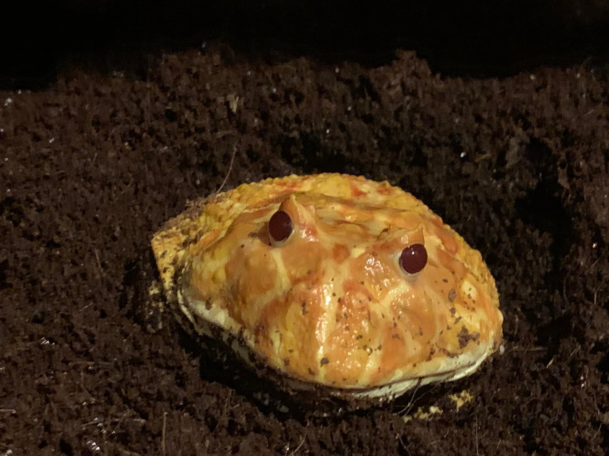

Welcome To FrogLand
Frogs are lovable tailess amphibians. They come in many shapes and sizes. Here we have a specific one shown which is called a Strawberry Pineapple Pacman Frog, His name is Jerry.
Like all amphibians, frogs are cold-blooded, meaning their body temperatures change with the temperature of their surroundings. When temperatures drop, some frogs dig burrows underground or in the mud at the bottom of ponds. They hibernate in these burrows until spring, completely still and scarcely breathing.
This little bad boy right here can eat bugs, Rats, Scorpions, Snakes, Pretty much anything he can fit inside his mouth.
Frogs have excellent night vision and are very sensitive to movement. The bulging eyes of most frogs allow them to see in front, to the sides, and partially behind them. When a frog swallows food, it pulls its eyes down into the roof of its mouth, to help push the food down its throat.
Frogs were the first land animals with vocal cords. Male frogs have vocal sacs—pouches of skin that fill with air. These balloons resonate sounds like a megaphone, and some frog sounds can be heard from a mile away.
The vocal sac is the flexible membrane of skin possessed by most male frogs. The purpose of the vocal sac is usually as an amplification of their mating or advertisement call.